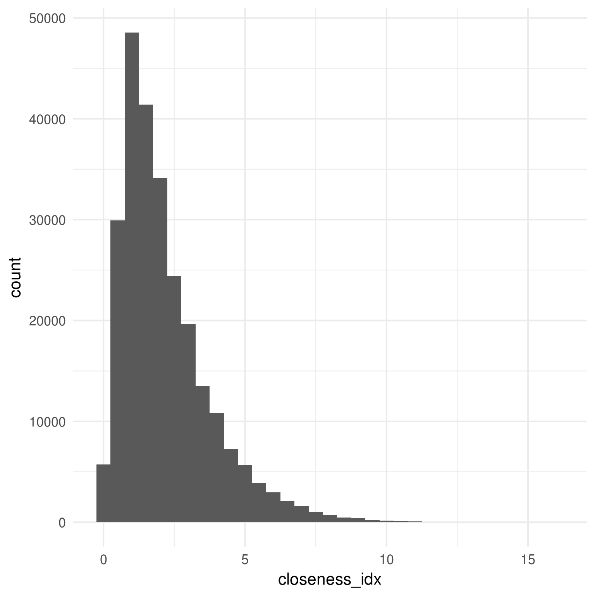
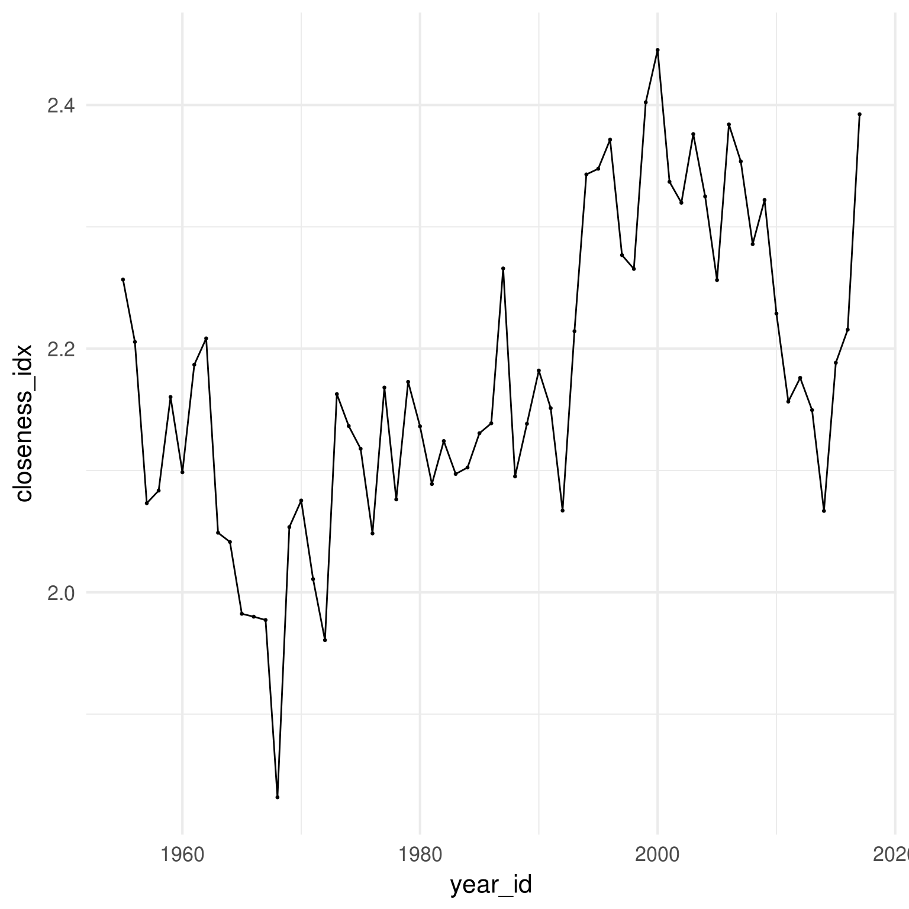
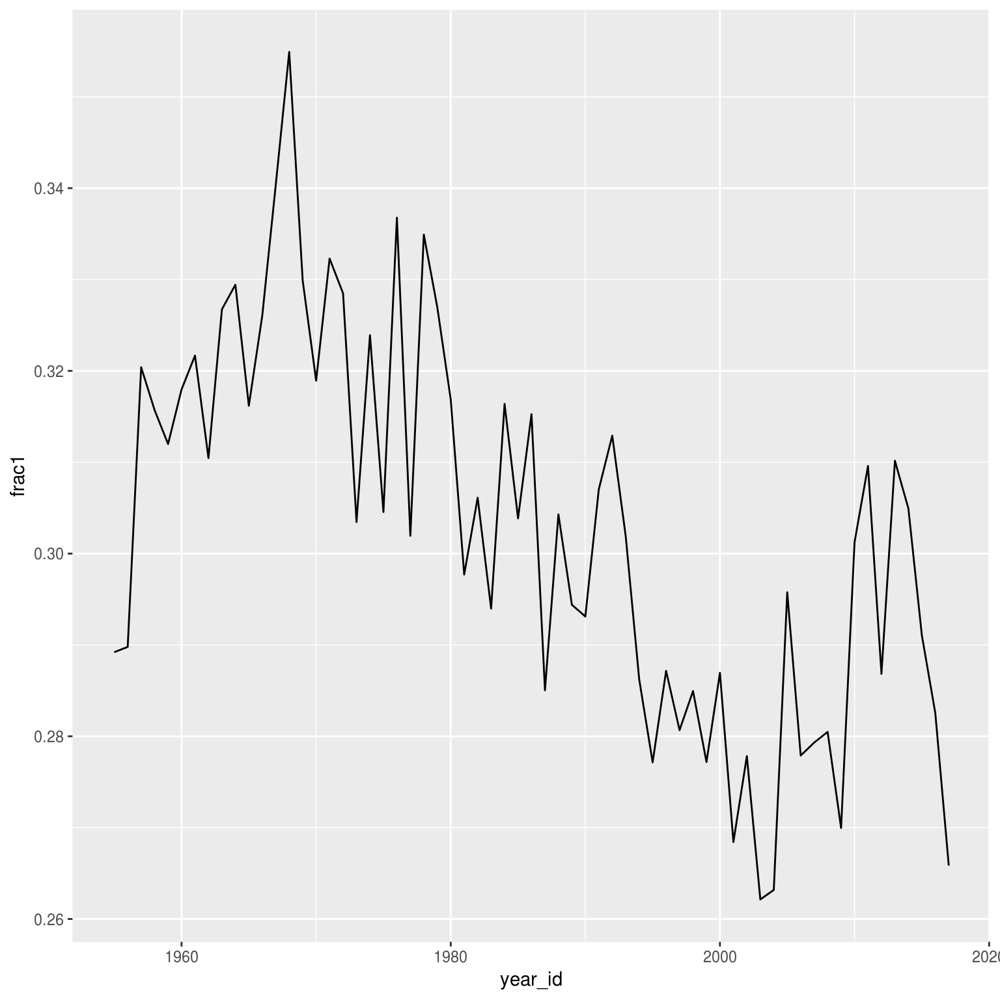
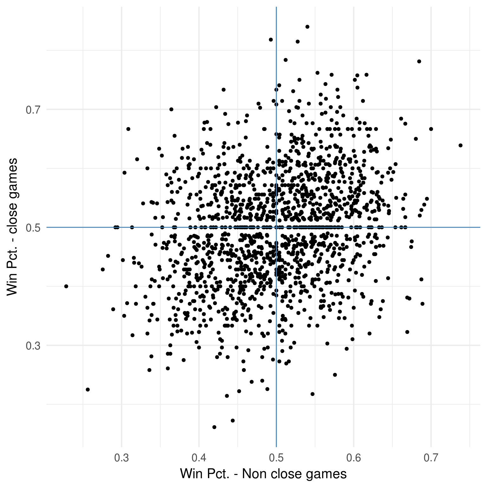
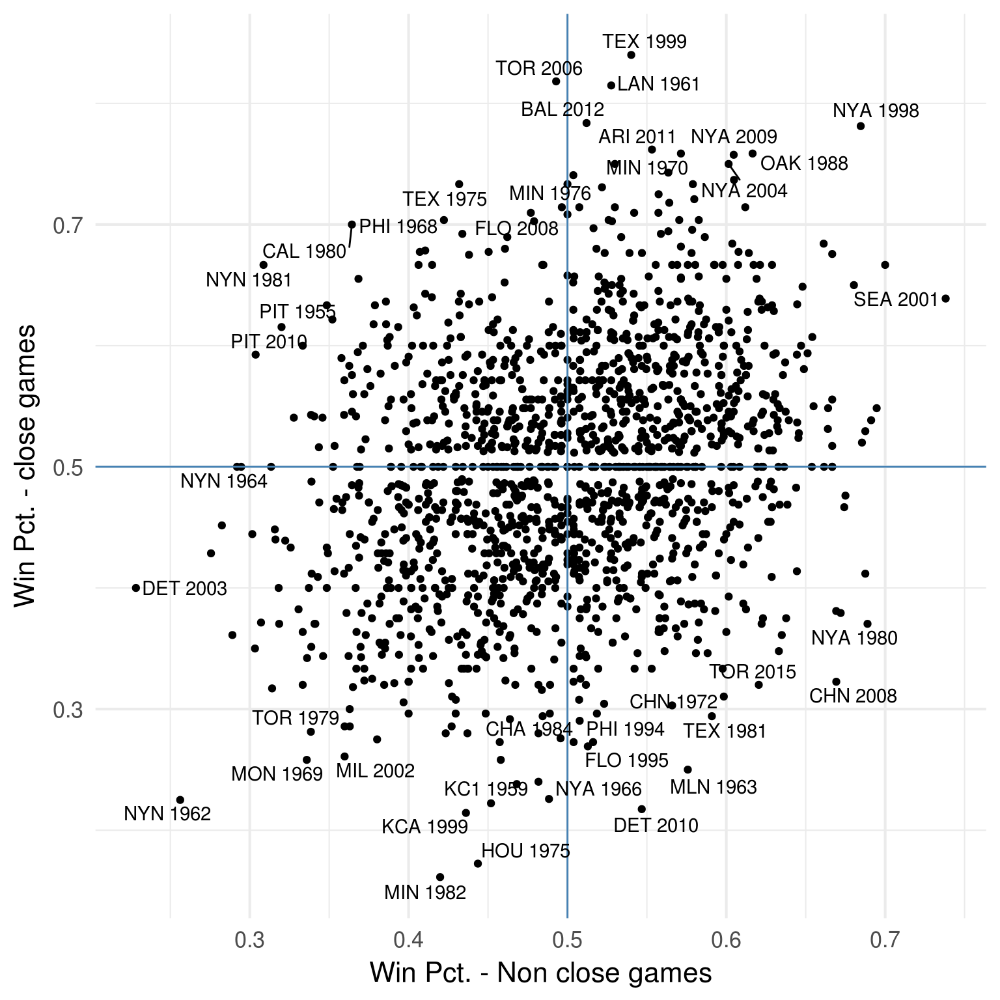

The last post looked at records in one-run games. This topic is in the zeitgeist currently since because of the Mariners high number of wins. It turns out that Baseball Musings offered a alternative way of thinking about it some 8 years ago. The overarching idea here is that one-run games are kind of a proxy for tight games - but there’s a difference between a game that’s not close, and then the bullpen blows a lead and it ends up at 1-run, versus a game that’s close the whole way. The second type is qualitatively different and if we’re going to look for team makeups that lead to success in one-run games, tells us more about how strategy might factor in.
To reemphasise what the technical idea is, you compute a closeness index for a game by taking the average of the absolute value of the score differential at the end of each half inning. So there’s a lower limit for a regulation 9-inning game of 1/18 = 0.056.
This post will use this definition for closeness index and expnad on the wrok for Baseball Musings.
library(RPostgres)
library(DBI)
library(dplyr)
library(ggplot2)
library(ggrepel)
library(tidyr)I’ll use the retrosheet event-level data. This is overkill in a way since I only need scores at the end of half-innings, but it’s the best way I know how to get that.
In Baseball Musings look at closeness, he looked exclusively at 1974+, where the records are 100% complete. I’m going to look at 1955+ since I’m looking mainly for outliers and overall trends and am not overly concernbed with completeness ; a maxim I generally live by is don;t let the perfect be the enem,y of the good.
connect to the database
conn <- dbConnect(RPostgres::Postgres(),
password=Sys.getenv("PSQL_PASS"),
user=Sys.getenv("PSQL_USER"),
port=Sys.getenv("PSQL_PORT"),
dbname='retrosheet')Grab data since 1955, filtering to only include end of innings
ev = dbGetQuery(conn, "select * from event where year_id > 1954 and inn_end_fl = \'t\'")Process the data to
process_data = function(ev) {
ev2 = ev %>%
mutate(home_score = home_score_ct + ifelse(bat_home_id==1, event_runs_ct, 0),
away_score = away_score_ct + ifelse(bat_home_id==0, event_runs_ct, 0))
evA = ev2 %>%
select(game_id, inn_ct, year_id, bat_home_id,
team_id=home_team_id, opp_id=away_team_id,
team_score=home_score, opp_score=away_score)
evH = ev2 %>%
select(game_id, inn_ct, year_id, bat_home_id,
team_id=away_team_id, opp_id=home_team_id,
team_score=away_score, opp_score=home_score)
evX = dplyr::bind_rows(evA, evH) %>%
mutate(close_idx = abs(team_score - opp_score))
}evX = process_data(ev)add the wins
get_wins = function(evX) {
win_df = evX %>%
group_by(game_id) %>%
mutate(mx = max(inn_ct)) %>%
filter(inn_ct==mx) %>%
arrange(-bat_home_id) %>%
mutate(ridx= row_number()) %>%
filter(ridx <= 2) %>% mutate(is_win= team_score > opp_score) %>%
select(game_id, team_id, is_win)
win_df %>% inner_join(evX, by=c("game_id", "team_id")) %>%
group_by(game_id, year_id, team_id) %>%
mutate(closeness_score=mean(close_idx)) %>% ungroup()
}w = get_wins(evX)Compute the closeness index for each game
w2 = w %>%
group_by(game_id, team_id, is_win, year_id) %>%
summarise(closeness_idx=mean(close_idx)) %>%
ungroup()The distribution of closeness index
p = w2 %>% ggplot(aes(x=closeness_idx)) +
geom_histogram(binwidth = 0.5) +
theme_minimal(base_size = 16)
print(p)
The top lowest games
w2 %>% group_by(game_id) %>%
summarise(closeness_idx=mean(closeness_idx)) %>%
arrange(closeness_idx) %>%
filter(closeness_idx < 0.032) %>%
knitr::kable()| game_id | closeness_idx |
|---|---|
| BAL195705192 | 0.0000000 |
| CHN195608122 | 0.0000000 |
| NYN196510022 | 0.0000000 |
| SLN198909130 | 0.0000000 |
| HOU196804150 | 0.0208333 |
| OAK197107090 | 0.0250000 |
| BAL197409270 | 0.0294118 |
| CHA196709130 | 0.0294118 |
| HOU198008230 | 0.0294118 |
| MON198109210 | 0.0294118 |
| NYN199309290 | 0.0294118 |
| BAL195909112 | 0.0312500 |
| CHN200305310 | 0.0312500 |
| HOU197604210 | 0.0312500 |
| PHI199105170 | 0.0312500 |
| SFN196307020 | 0.0312500 |
Highest
w2 %>% group_by(game_id) %>%
summarise(closeness_idx=mean(closeness_idx)) %>%
arrange(-closeness_idx) %>%
filter(closeness_idx > 12.6) %>%
knitr::kable()| game_id | closeness_idx |
|---|---|
| CHN197509160 | 16.11111 |
| TOR197908250 | 15.66667 |
| DET200409091 | 15.61111 |
| BOS200306270 | 14.58824 |
| NYA200904180 | 14.00000 |
| KC1195504230 | 13.66667 |
| SLN196108030 | 13.55556 |
| BAL200009280 | 13.47059 |
| NYA201107302 | 13.47059 |
| PHI198506110 | 13.23529 |
| MIN198207150 | 13.22222 |
| BOS199906260 | 13.11765 |
| PHI200907060 | 13.11765 |
| KCA200609230 | 13.00000 |
| KCA200006180 | 12.94444 |
| COL200509200 | 12.88235 |
| SDN196906280 | 12.77778 |
| NYA200006180 | 12.66667 |
| ATL199906130 | 12.61111 |
Based on the table above we can see that closeness - as measured by score differential - is related to the run scoring environment. Here’s the yearly averages,
p = w2 %>% group_by(year_id) %>%
summarise(closeness_idx = mean(closeness_idx)) %>%
ggplot(aes(x=year_id, y=closeness_idx)) +
geom_point(size=0.5) +
geom_line() + theme_minimal(base_size = 16)
print(p)
Fraction of all games that are one-run games
p = w %>% group_by(game_id, year_id, team_id) %>% summarise(team_score=max(team_score), opp_score = max(opp_score)) %>% ungroup() %>% mutate(is1 = abs(team_score - opp_score) == 1) %>% group_by(year_id) %>% summarise(frac1 = mean(is1)) %>% ggplot(aes(x=year_id, y=frac1)) + geom_line()
print(p)
Based on the above we see that historically “one-run games” occur something like 30% of the time. Here I take the lowest 30% of closeness index as definition of “close games” and see which teams had the most wins and highest win percentage
close_definition = 0.3
close_percentile_df = w2 %>%
mutate(dummy=1) %>%
group_by(year_id) %>%
arrange(year_id, closeness_idx) %>%
mutate(running = cumsum(dummy), n=n(), c_frac=running / n) %>%
ungroup()close_percentile_df %>%
mutate(is_close = c_frac <= close_definition) %>%
group_by(year_id, team_id) %>%
summarise(w=sum(is_win), g=n(),
w_close = sum(is_close * is_win),
g_close = sum(is_close),
wpct_close = w_close/g_close) %>%
arrange(-w_close) %>% head(20) %>% knitr::kable()| year_id | team_id | w | g | w_close | g_close | wpct_close |
|---|---|---|---|---|---|---|
| 1969 | NYN | 100 | 162 | 42 | 60 | 0.7000000 |
| 1959 | CHA | 94 | 156 | 40 | 56 | 0.7142857 |
| 1992 | PIT | 96 | 162 | 40 | 60 | 0.6666667 |
| 2002 | LAN | 92 | 162 | 40 | 61 | 0.6557377 |
| 2011 | SFN | 86 | 162 | 40 | 70 | 0.5714286 |
| 1999 | ATL | 103 | 162 | 39 | 56 | 0.6964286 |
| 2003 | LAN | 85 | 162 | 39 | 71 | 0.5492958 |
| 1993 | ATL | 104 | 162 | 38 | 60 | 0.6333333 |
| 2015 | SLN | 100 | 162 | 38 | 66 | 0.5757576 |
| 2016 | SFN | 87 | 162 | 38 | 63 | 0.6031746 |
| 1965 | LAN | 97 | 162 | 37 | 68 | 0.5441176 |
| 1966 | LAN | 95 | 162 | 37 | 59 | 0.6271186 |
| 1977 | BAL | 97 | 161 | 37 | 52 | 0.7115385 |
| 1995 | ATL | 90 | 144 | 37 | 59 | 0.6271186 |
| 2008 | ANA | 100 | 162 | 37 | 58 | 0.6379310 |
| 2009 | NYA | 103 | 162 | 37 | 48 | 0.7708333 |
| 2012 | BAL | 93 | 162 | 37 | 53 | 0.6981132 |
| 2012 | CIN | 97 | 162 | 37 | 63 | 0.5873016 |
| 1976 | CHN | 75 | 162 | 36 | 63 | 0.5714286 |
| 1979 | HOU | 89 | 162 | 36 | 59 | 0.6101695 |
close_percentile_df %>%
mutate(is_close = c_frac <= close_definition) %>%
group_by(year_id, team_id) %>%
summarise(w=sum(is_win), g=n(),
w_close = sum(is_close * is_win),
g_close = sum(is_close),
wpct_close = w_close/g_close) %>%
arrange(-wpct_close) %>% head(20) %>% knitr::kable()| year_id | team_id | w | g | w_close | g_close | wpct_close |
|---|---|---|---|---|---|---|
| 2009 | NYA | 103 | 162 | 37 | 48 | 0.7708333 |
| 1961 | LAN | 89 | 154 | 32 | 43 | 0.7441860 |
| 1995 | CLE | 100 | 144 | 34 | 46 | 0.7391304 |
| 2007 | NYN | 88 | 162 | 29 | 40 | 0.7250000 |
| 1956 | BOS | 83 | 152 | 30 | 42 | 0.7142857 |
| 1959 | CHA | 94 | 156 | 40 | 56 | 0.7142857 |
| 1977 | BAL | 97 | 161 | 37 | 52 | 0.7115385 |
| 1999 | TEX | 95 | 162 | 27 | 38 | 0.7105263 |
| 1961 | CIN | 93 | 154 | 29 | 41 | 0.7073171 |
| 1995 | BOS | 86 | 144 | 29 | 41 | 0.7073171 |
| 1998 | NYA | 114 | 162 | 29 | 41 | 0.7073171 |
| 2012 | OAK | 94 | 162 | 36 | 51 | 0.7058824 |
| 1963 | LAN | 99 | 163 | 35 | 50 | 0.7000000 |
| 1969 | NYN | 100 | 162 | 42 | 60 | 0.7000000 |
| 2012 | BAL | 93 | 162 | 37 | 53 | 0.6981132 |
| 2002 | OAK | 103 | 162 | 30 | 43 | 0.6976744 |
| 2004 | NYA | 101 | 162 | 30 | 43 | 0.6976744 |
| 1999 | ATL | 103 | 162 | 39 | 56 | 0.6964286 |
| 1970 | CIN | 102 | 162 | 32 | 46 | 0.6956522 |
| 1984 | NYN | 90 | 162 | 32 | 46 | 0.6956522 |
Let’s tighten that up to 20th percentile
close_definition = 0.2close_percentile_df %>%
mutate(is_close = c_frac <= close_definition) %>%
group_by(year_id, team_id) %>%
summarise(w=sum(is_win), g=n(),
w_close = sum(is_close * is_win),
g_close = sum(is_close),
wpct_close = w_close/g_close) %>%
arrange(-w_close) %>% head(20) %>% knitr::kable()| year_id | team_id | w | g | w_close | g_close | wpct_close |
|---|---|---|---|---|---|---|
| 2011 | SFN | 86 | 162 | 32 | 52 | 0.6153846 |
| 1969 | NYN | 100 | 162 | 31 | 43 | 0.7209302 |
| 1968 | SLN | 97 | 162 | 29 | 40 | 0.7250000 |
| 2003 | LAN | 85 | 162 | 29 | 52 | 0.5576923 |
| 2012 | BAL | 93 | 162 | 29 | 37 | 0.7837838 |
| 2016 | SFN | 87 | 162 | 29 | 48 | 0.6041667 |
| 1959 | CHA | 94 | 156 | 28 | 39 | 0.7179487 |
| 1985 | NYN | 98 | 162 | 28 | 48 | 0.5833333 |
| 1993 | SLN | 87 | 162 | 28 | 49 | 0.5714286 |
| 1999 | ATL | 103 | 162 | 28 | 38 | 0.7368421 |
| 2011 | WAS | 80 | 161 | 28 | 44 | 0.6363636 |
| 1963 | HOU | 66 | 162 | 27 | 45 | 0.6000000 |
| 1975 | SFN | 80 | 161 | 27 | 40 | 0.6750000 |
| 1993 | MON | 94 | 163 | 27 | 46 | 0.5869565 |
| 2004 | MIN | 92 | 162 | 27 | 42 | 0.6428571 |
| 2004 | OAK | 91 | 162 | 27 | 42 | 0.6428571 |
| 2007 | TOR | 83 | 162 | 27 | 48 | 0.5625000 |
| 2008 | ANA | 100 | 162 | 27 | 43 | 0.6279070 |
| 1969 | BAL | 109 | 162 | 26 | 40 | 0.6500000 |
| 1970 | BAL | 108 | 162 | 26 | 38 | 0.6842105 |
close_percentile_df %>%
mutate(is_close = c_frac <= close_definition) %>%
group_by(year_id, team_id) %>%
summarise(w=sum(is_win), g=n(),
w_close = sum(is_close * is_win),
g_close = sum(is_close),
wpct_close = w_close/g_close) %>%
arrange(-wpct_close) %>% head(20) %>% knitr::kable()| year_id | team_id | w | g | w_close | g_close | wpct_close |
|---|---|---|---|---|---|---|
| 1999 | TEX | 95 | 162 | 21 | 25 | 0.8400000 |
| 2006 | TOR | 87 | 162 | 18 | 22 | 0.8181818 |
| 1961 | LAN | 89 | 154 | 22 | 27 | 0.8148148 |
| 2012 | BAL | 93 | 162 | 29 | 37 | 0.7837838 |
| 1998 | NYA | 114 | 162 | 25 | 32 | 0.7812500 |
| 2011 | ARI | 94 | 162 | 16 | 21 | 0.7619048 |
| 1970 | MIN | 98 | 162 | 22 | 29 | 0.7586207 |
| 1988 | OAK | 104 | 162 | 22 | 29 | 0.7586207 |
| 2009 | NYA | 103 | 162 | 25 | 33 | 0.7575758 |
| 2004 | NYA | 101 | 162 | 18 | 24 | 0.7500000 |
| 2013 | CLE | 92 | 162 | 21 | 28 | 0.7500000 |
| 1977 | BAL | 97 | 161 | 26 | 35 | 0.7428571 |
| 2005 | PHI | 88 | 162 | 20 | 27 | 0.7407407 |
| 1999 | ATL | 103 | 162 | 28 | 38 | 0.7368421 |
| 1956 | BOS | 83 | 152 | 22 | 30 | 0.7333333 |
| 1963 | LAN | 99 | 163 | 22 | 30 | 0.7333333 |
| 1975 | TEX | 79 | 162 | 22 | 30 | 0.7333333 |
| 1967 | MIN | 91 | 164 | 19 | 26 | 0.7307692 |
| 1968 | SLN | 97 | 162 | 29 | 40 | 0.7250000 |
| 1969 | NYN | 100 | 162 | 31 | 43 | 0.7209302 |
Let’s tighten that up to 10th percentile
close_definition = 0.1close_percentile_df %>%
mutate(is_close = c_frac <= close_definition) %>%
group_by(year_id, team_id) %>%
summarise(w=sum(is_win), g=n(),
w_close = sum(is_close * is_win),
g_close = sum(is_close),
wpct_close = w_close/g_close) %>%
arrange(-w_close) %>% head(20) %>% knitr::kable()| year_id | team_id | w | g | w_close | g_close | wpct_close |
|---|---|---|---|---|---|---|
| 1999 | ATL | 103 | 162 | 20 | 26 | 0.7692308 |
| 1974 | BAL | 91 | 162 | 19 | 25 | 0.7600000 |
| 1969 | NYN | 100 | 162 | 18 | 23 | 0.7826087 |
| 1996 | SDN | 91 | 162 | 18 | 26 | 0.6923077 |
| 1993 | ATL | 104 | 162 | 17 | 24 | 0.7083333 |
| 2002 | SFN | 95 | 162 | 17 | 25 | 0.6800000 |
| 2004 | SLN | 105 | 162 | 17 | 23 | 0.7391304 |
| 2009 | LAN | 95 | 162 | 17 | 28 | 0.6071429 |
| 1967 | CHA | 89 | 162 | 16 | 24 | 0.6666667 |
| 1970 | PHI | 73 | 161 | 16 | 23 | 0.6956522 |
| 1975 | SFN | 80 | 161 | 16 | 22 | 0.7272727 |
| 1980 | MON | 90 | 162 | 16 | 24 | 0.6666667 |
| 1980 | SDN | 73 | 163 | 16 | 27 | 0.5925926 |
| 1982 | PHI | 89 | 162 | 16 | 23 | 0.6956522 |
| 1990 | BOS | 88 | 162 | 16 | 23 | 0.6956522 |
| 1990 | HOU | 75 | 162 | 16 | 30 | 0.5333333 |
| 1993 | SLN | 87 | 162 | 16 | 27 | 0.5925926 |
| 1997 | ATL | 101 | 162 | 16 | 31 | 0.5161290 |
| 1998 | LAN | 83 | 162 | 16 | 24 | 0.6666667 |
| 2003 | ARI | 84 | 162 | 16 | 26 | 0.6153846 |
close_percentile_df %>%
mutate(is_close = c_frac <= close_definition) %>%
group_by(year_id, team_id) %>%
summarise(w=sum(is_win), g=n(),
w_close = sum(is_close * is_win),
g_close = sum(is_close),
wpct_close = w_close/g_close) %>%
arrange(-wpct_close) %>% head(20) %>% knitr::kable()| year_id | team_id | w | g | w_close | g_close | wpct_close |
|---|---|---|---|---|---|---|
| 2009 | NYA | 103 | 162 | 12 | 13 | 0.9230769 |
| 2003 | SFN | 100 | 161 | 11 | 12 | 0.9166667 |
| 1968 | PHI | 76 | 162 | 9 | 10 | 0.9000000 |
| 2012 | BAL | 93 | 162 | 16 | 18 | 0.8888889 |
| 1999 | TEX | 95 | 162 | 13 | 15 | 0.8666667 |
| 1984 | NYN | 90 | 162 | 12 | 14 | 0.8571429 |
| 2006 | TOR | 87 | 162 | 6 | 7 | 0.8571429 |
| 1998 | HOU | 102 | 162 | 11 | 13 | 0.8461538 |
| 1988 | OAK | 104 | 162 | 15 | 18 | 0.8333333 |
| 1995 | ATL | 90 | 144 | 15 | 18 | 0.8333333 |
| 1996 | MIL | 80 | 162 | 10 | 12 | 0.8333333 |
| 2000 | OAK | 91 | 161 | 5 | 6 | 0.8333333 |
| 2013 | ATL | 96 | 162 | 10 | 12 | 0.8333333 |
| 2017 | WAS | 97 | 162 | 15 | 18 | 0.8333333 |
| 1989 | SDN | 89 | 162 | 14 | 17 | 0.8235294 |
| 1977 | SFN | 75 | 162 | 9 | 11 | 0.8181818 |
| 1990 | CHN | 77 | 162 | 9 | 11 | 0.8181818 |
| 1995 | CLE | 100 | 144 | 9 | 11 | 0.8181818 |
| 1981 | CIN | 66 | 108 | 8 | 10 | 0.8000000 |
| 1981 | TEX | 57 | 105 | 4 | 5 | 0.8000000 |
Let’s try looking at blowouts
blowout_definition = 0.8close_percentile_df %>%
mutate(is_blowout = c_frac >= blowout_definition) %>%
group_by(year_id, team_id) %>%
summarise(w=sum(is_win), g=n(),
w_blowout = sum(is_blowout * is_win),
g_blowout = sum(is_blowout),
wpct_blowout = w_blowout/g_blowout) %>%
arrange(-w_blowout) %>% head(20) %>% knitr::kable()| year_id | team_id | w | g | w_blowout | g_blowout | wpct_blowout |
|---|---|---|---|---|---|---|
| 2015 | TOR | 93 | 162 | 33 | 47 | 0.7021277 |
| 1983 | BAL | 98 | 162 | 32 | 51 | 0.6274510 |
| 1985 | NYA | 97 | 161 | 32 | 43 | 0.7441860 |
| 1956 | NYA | 97 | 154 | 31 | 47 | 0.6595745 |
| 1962 | SFN | 103 | 165 | 31 | 44 | 0.7045455 |
| 1970 | CHN | 84 | 162 | 31 | 41 | 0.7560976 |
| 1987 | DET | 98 | 162 | 31 | 47 | 0.6595745 |
| 2002 | ANA | 99 | 162 | 31 | 39 | 0.7948718 |
| 1977 | NYA | 100 | 162 | 30 | 44 | 0.6818182 |
| 1979 | BOS | 91 | 160 | 30 | 44 | 0.6818182 |
| 1980 | KCA | 97 | 162 | 30 | 47 | 0.6382979 |
| 1998 | NYA | 114 | 162 | 30 | 39 | 0.7692308 |
| 1976 | CIN | 102 | 162 | 29 | 39 | 0.7435897 |
| 1988 | TOR | 87 | 162 | 29 | 45 | 0.6444444 |
| 1998 | HOU | 102 | 162 | 29 | 35 | 0.8285714 |
| 1999 | CLE | 97 | 162 | 29 | 42 | 0.6904762 |
| 2003 | NYA | 101 | 163 | 29 | 42 | 0.6904762 |
| 1955 | NYA | 96 | 154 | 28 | 37 | 0.7567568 |
| 1961 | DET | 101 | 163 | 28 | 41 | 0.6829268 |
| 1962 | LAN | 102 | 165 | 28 | 47 | 0.5957447 |
close_percentile_df %>%
mutate(is_blowout = c_frac >= blowout_definition) %>%
group_by(year_id, team_id) %>%
summarise(w=sum(is_win), g=n(),
w_blowout = sum(is_blowout * is_win),
g_blowout = sum(is_blowout),
wpct_blowout = w_blowout/g_blowout) %>%
arrange(-wpct_blowout) %>% head(20) %>% knitr::kable()| year_id | team_id | w | g | w_blowout | g_blowout | wpct_blowout |
|---|---|---|---|---|---|---|
| 2017 | CLE | 102 | 162 | 28 | 32 | 0.8750000 |
| 1999 | ARI | 100 | 162 | 20 | 23 | 0.8695652 |
| 1969 | BAL | 109 | 162 | 27 | 32 | 0.8437500 |
| 1994 | ATL | 68 | 114 | 15 | 18 | 0.8333333 |
| 1998 | HOU | 102 | 162 | 29 | 35 | 0.8285714 |
| 2012 | TBA | 90 | 162 | 22 | 27 | 0.8148148 |
| 1971 | BAL | 101 | 158 | 26 | 32 | 0.8125000 |
| 1990 | PIT | 95 | 162 | 26 | 32 | 0.8125000 |
| 2012 | ATL | 94 | 162 | 25 | 31 | 0.8064516 |
| 2008 | CHN | 97 | 161 | 24 | 30 | 0.8000000 |
| 2016 | CHN | 103 | 162 | 24 | 30 | 0.8000000 |
| 2002 | ANA | 99 | 162 | 31 | 39 | 0.7948718 |
| 1976 | PHI | 101 | 162 | 25 | 32 | 0.7812500 |
| 1979 | BAL | 102 | 159 | 21 | 27 | 0.7777778 |
| 1997 | ATL | 101 | 162 | 21 | 27 | 0.7777778 |
| 1960 | CHA | 87 | 154 | 24 | 31 | 0.7741935 |
| 1977 | LAN | 98 | 162 | 24 | 31 | 0.7741935 |
| 1996 | SEA | 85 | 161 | 24 | 31 | 0.7741935 |
| 2016 | BOS | 93 | 162 | 27 | 35 | 0.7714286 |
| 1970 | MIN | 98 | 162 | 20 | 26 | 0.7692308 |
Rachet it up to 90th percentile
blowout_definition = 0.9close_percentile_df %>%
mutate(is_blowout = c_frac >= blowout_definition) %>%
group_by(year_id, team_id) %>%
summarise(w=sum(is_win), g=n(),
w_blowout = sum(is_blowout * is_win),
g_blowout = sum(is_blowout),
wpct_blowout = w_blowout/g_blowout) %>%
arrange(-w_blowout) %>% head(20) %>% knitr::kable()| year_id | team_id | w | g | w_blowout | g_blowout | wpct_blowout |
|---|---|---|---|---|---|---|
| 1987 | DET | 98 | 162 | 24 | 31 | 0.7741935 |
| 1977 | NYA | 100 | 162 | 21 | 25 | 0.8400000 |
| 2014 | OAK | 88 | 162 | 21 | 26 | 0.8076923 |
| 2011 | TEX | 96 | 162 | 19 | 30 | 0.6333333 |
| 2013 | SLN | 97 | 162 | 19 | 24 | 0.7916667 |
| 2015 | TOR | 93 | 162 | 19 | 23 | 0.8260870 |
| 1969 | MIN | 97 | 162 | 18 | 23 | 0.7826087 |
| 1970 | BAL | 108 | 162 | 18 | 23 | 0.7826087 |
| 1980 | KCA | 97 | 162 | 18 | 26 | 0.6923077 |
| 1986 | BOS | 95 | 161 | 18 | 19 | 0.9473684 |
| 1992 | MIL | 92 | 162 | 18 | 25 | 0.7200000 |
| 1992 | TOR | 96 | 162 | 18 | 28 | 0.6428571 |
| 1995 | CAL | 78 | 145 | 18 | 25 | 0.7200000 |
| 1998 | NYA | 114 | 162 | 18 | 22 | 0.8181818 |
| 2013 | DET | 93 | 162 | 18 | 21 | 0.8571429 |
| 1956 | NYA | 97 | 154 | 17 | 23 | 0.7391304 |
| 1982 | CAL | 93 | 162 | 17 | 17 | 1.0000000 |
| 1983 | DET | 92 | 162 | 17 | 25 | 0.6800000 |
| 1985 | NYA | 97 | 161 | 17 | 24 | 0.7083333 |
| 2002 | BOS | 93 | 162 | 17 | 19 | 0.8947368 |
close_percentile_df %>%
mutate(is_blowout = c_frac >= blowout_definition) %>%
group_by(year_id, team_id) %>%
summarise(w=sum(is_win), g=n(),
w_blowout = sum(is_blowout * is_win),
g_blowout = sum(is_blowout),
wpct_blowout = w_blowout/g_blowout) %>%
arrange(-wpct_blowout) %>% head(20) %>% knitr::kable()| year_id | team_id | w | g | w_blowout | g_blowout | wpct_blowout |
|---|---|---|---|---|---|---|
| 1966 | BAL | 97 | 160 | 11 | 11 | 1.0000000 |
| 1977 | KCA | 102 | 162 | 12 | 12 | 1.0000000 |
| 1982 | CAL | 93 | 162 | 17 | 17 | 1.0000000 |
| 1994 | PHI | 54 | 115 | 4 | 4 | 1.0000000 |
| 1986 | BOS | 95 | 161 | 18 | 19 | 0.9473684 |
| 1998 | HOU | 102 | 162 | 16 | 17 | 0.9411765 |
| 2017 | CLE | 102 | 162 | 16 | 17 | 0.9411765 |
| 1969 | BAL | 109 | 162 | 15 | 16 | 0.9375000 |
| 1995 | CLE | 100 | 144 | 14 | 15 | 0.9333333 |
| 1991 | PIT | 98 | 162 | 12 | 13 | 0.9230769 |
| 1960 | DET | 71 | 154 | 11 | 12 | 0.9166667 |
| 1986 | NYN | 108 | 162 | 11 | 12 | 0.9166667 |
| 2009 | PHI | 93 | 162 | 11 | 12 | 0.9166667 |
| 2002 | BOS | 93 | 162 | 17 | 19 | 0.8947368 |
| 1984 | MON | 78 | 161 | 7 | 8 | 0.8750000 |
| 2012 | TBA | 90 | 162 | 14 | 16 | 0.8750000 |
| 2017 | NYA | 91 | 162 | 14 | 16 | 0.8750000 |
| 1974 | LAN | 102 | 162 | 13 | 15 | 0.8666667 |
| 1976 | PHI | 101 | 162 | 13 | 15 | 0.8666667 |
| 1979 | BAL | 102 | 159 | 13 | 15 | 0.8666667 |
close_definition = 0.2
plot_df = close_percentile_df %>%
mutate(is_close = c_frac <= close_definition) %>%
group_by(year_id, team_id) %>%
summarise(w=sum(is_win), g=n(),
w_close = sum(is_close * is_win),
g_close = sum(is_close),
wpct_close = w_close/g_close,
wpct_other = (w-w_close)/(g - g_close)) %>%
ungroup()p = plot_df %>%
ggplot(aes(x=wpct_other, y=wpct_close)) +
geom_point() +
theme_minimal(base_size = 16) +
geom_hline(yintercept = 0.5, size=0.5, color='steelblue') +
geom_vline(xintercept = 0.5, size=0.5, color='steelblue') +
labs(x="Win Pct. - Non close games", y="Win Pct. - close games")
print(p)
Label the ones that are on the edges
records_quads = plot_df %>%
mutate(r2=(wpct_other - 0.5)**2 + (wpct_close - 0.5)**2,
quad=as.integer(wpct_other >= 0.5) + 2 * as.integer(wpct_close >= 0.5))lab_df = records_quads %>%
group_by(quad) %>%
arrange(-r2) %>%
mutate(r2_rank=row_number()) %>%
filter(r2_rank <= 10) %>%
ungroup() %>%
mutate(name=paste(team_id, year_id))p2 = p +
geom_text_repel(data = lab_df, aes(x=wpct_other, y=wpct_close, label=name))
print(p2)